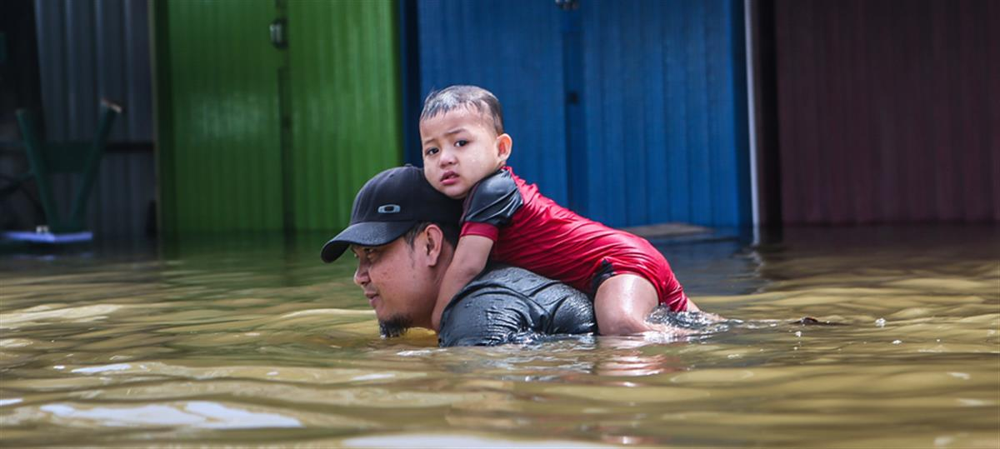

Climate change affects rich and poor unequally. Climate justice redresses the balance
Climate change is already harming peoples’ lives, but those effects are not being felt equally around the world. People in poorer countries and communities are facing the brunt of the crisis. Climate justice means balancing the scales, repairing the damage to these people’s lives but also holding those most responsible for the climate crisis to account.
- 9th March 2020
- Climate change
- Blog
Harpreet Kaur Paul
Human rights lawyer, policy and campaign strategist
Global temperatures have already risen by 1ºC, hitting those people least equipped to respond. Millions of people are experiencing food insecurity in southern African following unprecedented droughts and storms. Summer temperatures reach up to 51°C in parts of India and Pakistan, causing serious health problems. Diseases are spreading and crops are failing in Guatemala, while glacier melt threatens villages in Peru. Sea water poisons peoples’ farms in Bangladesh, forcing them off the land and into the cities. Here, they are often forced to take on gruelling, low paid work. In rural parts of Kenya, women travel further and further to get access to safe water.
Whether it’s flooding in the UK, storms in Malawi, or floods in Indonesia, extreme weather is becoming increasingly regular and ferocious. In places like Tuvalu, Fiji, and Papua New Guinea some communities are losing their homes and livelihoods to the rising sea.
Climate change impacts the poorest more than the wealthy
Climate impacts are felt globally, but wherever we are, our ability to cope depends on what is in our purse. The wealthy have funds or insurance to cover a quick retreat to safety, temporary accommodation, and rebuilding or relocation costs. But the poor may not be able to evacuate, may not have reliable access to food, water, housing or energy, and insurance may be unavailable or unaffordable. They may also have been victims of discriminatory state and corporate policies that disproportionately exposed them to risks that could have been better managed. Many factors beyond our control – our gender, age, economic status and location – all influence our ability to respond.
While those most responsible for climate change are relatively insulated from its impacts, those least responsible are stripped of basic freedoms and dignity. They have to survive ever greater adversities with increasingly limited resources.
Research by Oxfam shows that the world’s richest 10% of people cause 50% of emissions. This group also claims over half of the world’s wealth, and most live in the so-called “developed” world. The world’s poorest 50% of people contribute approximately 10% of global emissions and receive about 8% of global income.
Data from the World Bank show that the average person in the UK emits 65 times more carbon compared to someone in Malawi. US, Canadian and Australian citizens emit over 150 times more. These (already unbelievably disproportionate numbers) do not account for the carbon emissions built into making and shipping the technology we’re using, the food that we’re eating, or clothes we’re wearing.
At the same time, the sixth poorest country in the world, Mozambique, shoulders the burden of over $3.2 billion in loss and damage following two unprecedented cyclones in 2019. According to Civil Society Review, the global bill for damage from related to climate change suggest it’s likely to hit $300-700 billion by 2030.
Climate justice will balance the scales
The same report also suggests that sharing the damage cost fairly would mean at least 50% for the US and EU (including the UK), 10% for China, and 0.5% for India. But these numbers cannot do justice to the pain of a hungry child, separated family, or dislocated community.
Repairing the consequences of climate change is crucial. But, it is not enough. Climate justice also means transitioning away from the system that has got us here so that we can try to limit warming below 1.5°C. It also means starting now and not relying on false or future technology solutions to save us.
Accepting timelines for future action keeps business running as usual today, risking a 4°C future where no one will be able to escape impacts. Those that live in such as world will be forced into survival mode.
As we move to a low carbon world, those with the greatest responsibility for having got us here must be held to account. That’s starting with the fossil fuel, agribusiness, cement and concrete, and mining industries, plus their financial backers. This is particularly important given that just 100 companies are responsible for 71% of global emissions. Yet they keep getting government handouts and capital from private banks to fund new coal, oil and gas ventures.
Our governments must stop saying they’re committed to climate action while handing out money to the perpetrators of global breakdown. The Yellow Vest protests in France, sparked by tax breaks for the rich and rising fuel prices for the many, showed that if climate action allows those most culpable to escape paying the greatest price, they will be resisted.
Changing societies for the better
We already have the solutions. Moving to open and accessible renewable energy, restoring forests and shifting to sustainable agriculture will not only address the climate and nature emergencies, it will reverse the gross imbalance between rich and poor, those who can afford to adapt and those who can’t. When storms and other impacts hit, countries on the frontline of climate change should be supported, rather than being pushed further into debt.
It’s only by taking people and the planet off the stock market, and having a vision for flourishing communities beyond GDP growth, that we can do this. Addressing the climate crisis gives us the opportunity and mandate to reorient our societies towards protecting our human rights and repairing political, social and economic inequities.
Crucially, climate justice also means putting indigenous communities at the centre of this process. They have practiced sustainable living for so long, and have resiliently protected 80% of global biodiversity.
Climate justice is having the courage to imagine equity and fight for it. Another way of living and being is not only possible, but necessary and so much more joyful.
Harpreet Kaur Paul is a human rights lawyer and freelance policy and campaign strategist. She has worked with People & Planet, REDRESS, Amnesty International. She also organises with the grassroots group Wretched of the Earth. Follow her on Twitter.

SOURCE: GREENPEACE